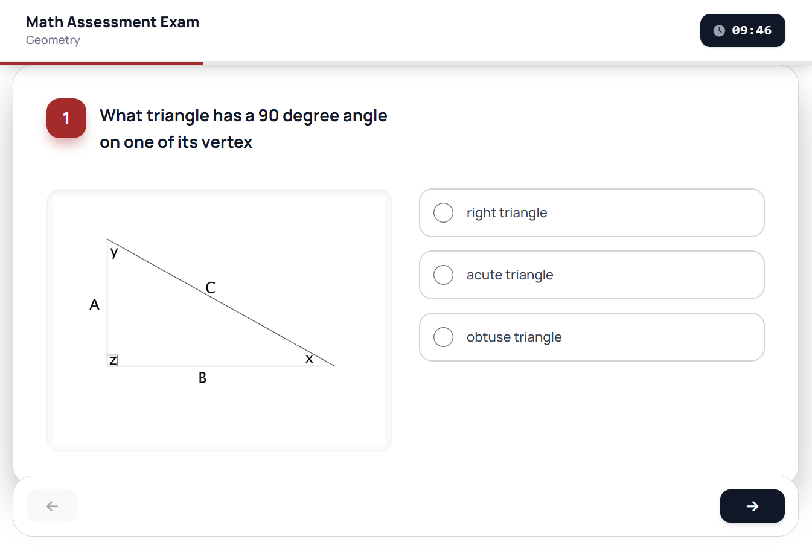
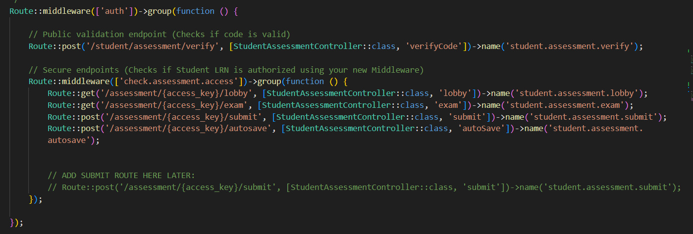

Advancing LMS Functionality & Security
JB
James Benedict
March 10, 2026
Week 3
During my third week, I shifted my focus toward the core administrative and student-facing functionalities of our Learning Management System. I successfully built the CRUD (Create, Read, Update, Delete) operations to manage schools, teachers, and students within the admin dashboard. This milestone was significant, as it allowed us to reach 30% overall project completion, providing a more stable architecture for the upcoming features.


A major priority this week was the Student Assessment Interface. I designed the question-and-answer layout and implemented a robust autosave feature to ensure student progress is synced in real-time, preventing data loss. During this development, I identified a critical security vulnerability: unauthorized students could bypass access controls by copy-pasting assessment URLs. To resolve this, I implemented Laravel middleware in the routing file to strictly enforce permission checks, ensuring that only students eligible for a specific exam can access its content.

This week provided deep insights into the necessity of data integrity in educational software. Learning how to properly secure routes has been a highlight of my professional growth, moving beyond just "making things work" to ensuring they are secure. As I look forward to next week, I plan to develop a comprehensive analytics dashboard to visualize student performance and streamline exam data management.